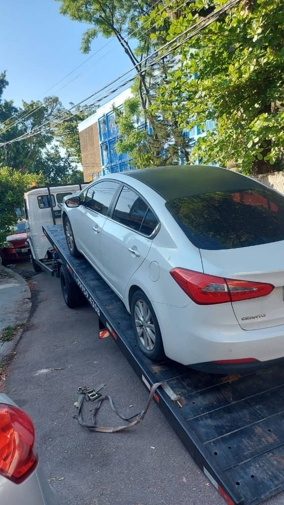
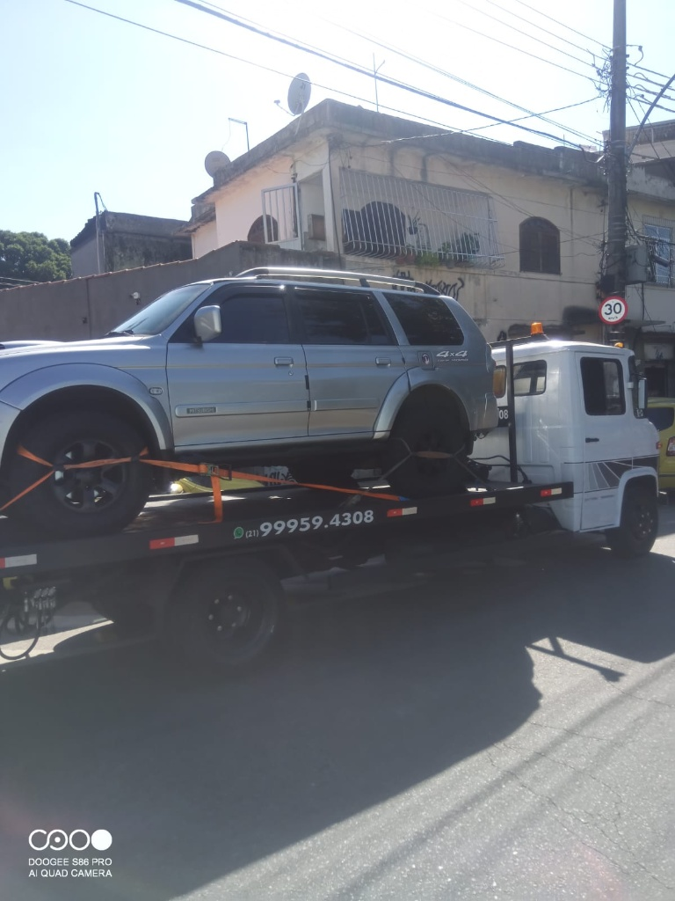
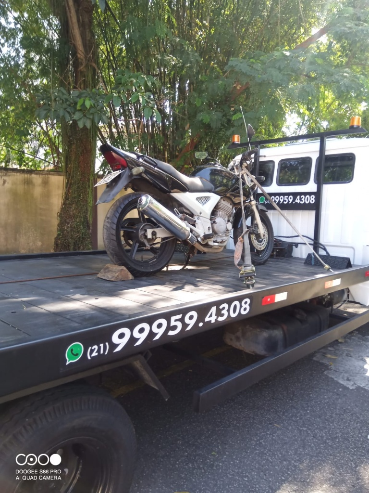
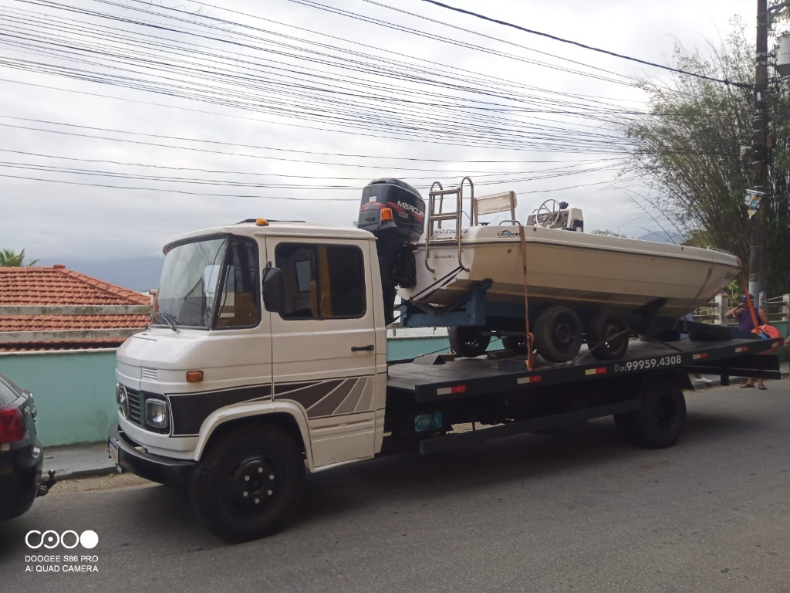
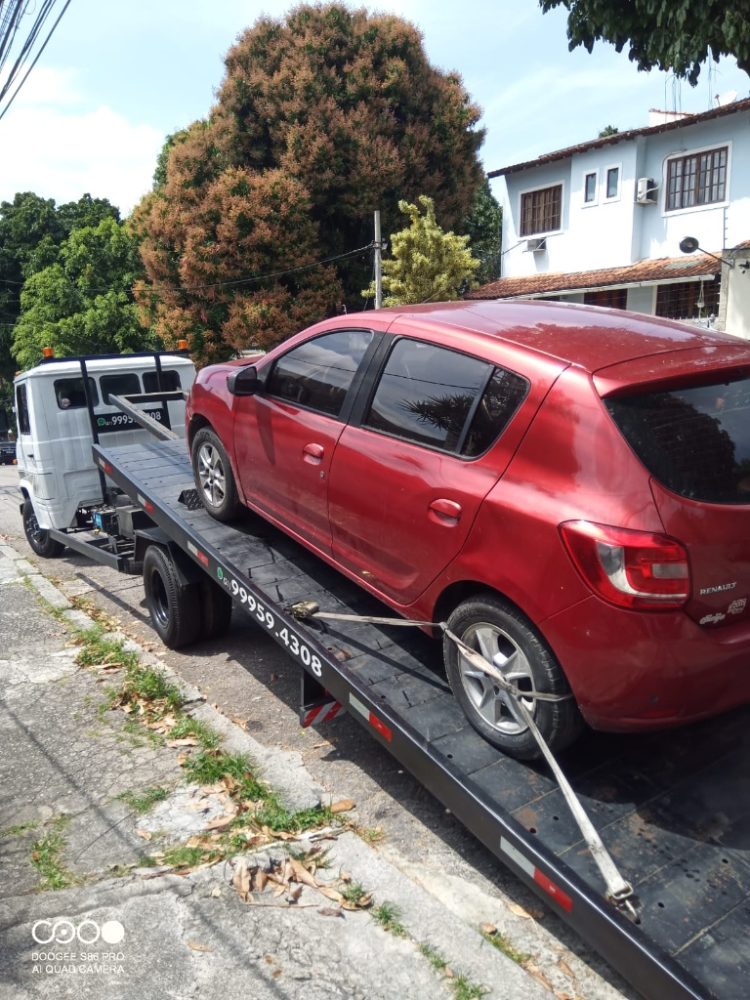

REBOQUE E GUINCHO 24 HORAS ATENDIMENTO IMEDIATO
Seu veículo quebrou? Batida? Atendimento rápido em Jacarepaguá, Barra da Tijuca e toda a região do Rio de Janeiro.
Cobertura Rápida em Toda a Região
Atendemos com máxima agilidade nas principais áreas de urgência no Rio de Janeiro:
- Jacarepaguá (Freguesia, Pechincha, Anil, Gardênia Azul)
- Taquara & Curicica
- Barra da Tijuca & Recreio dos Bandeirantes
- Linha Amarela & Autoestrada Grajaú-Jacarepaguá
- Piedade, Méier, Engenho de Dentro e Adjacências
Sua segurança é nossa prioridade. Entre em contato para um atendimento rápido e eficiente!
Por Que Escolher o Guincho RS?
24 Horas, 7 Dias por Semana
Disponibilidade total, a qualquer hora do dia ou da noite. Conte conosco na emergência.
Localização Estratégica
Nossa base em Jacarepaguá garante o menor tempo de chegada na sua localização.
Todos os Tipos de Veículo
Reboque seguro para carros de passeio, motos, vans e utilitários leves. A plataforma ideal para você.
Não Perca Tempo. Sua Ajuda está a um Clique!
Chame a equipe RS Reboque para um orçamento rápido e chegada imediata.